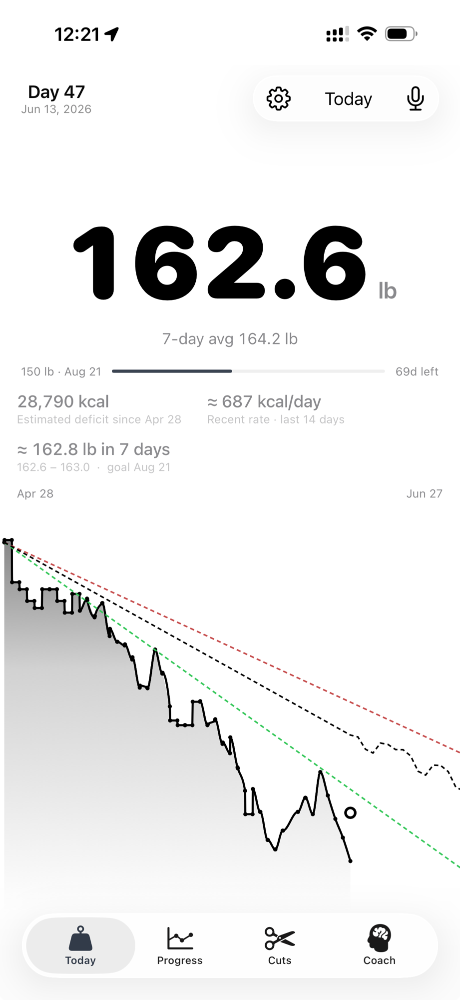
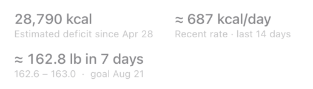
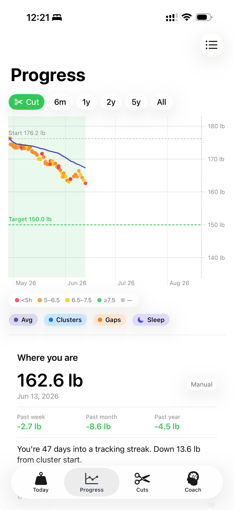
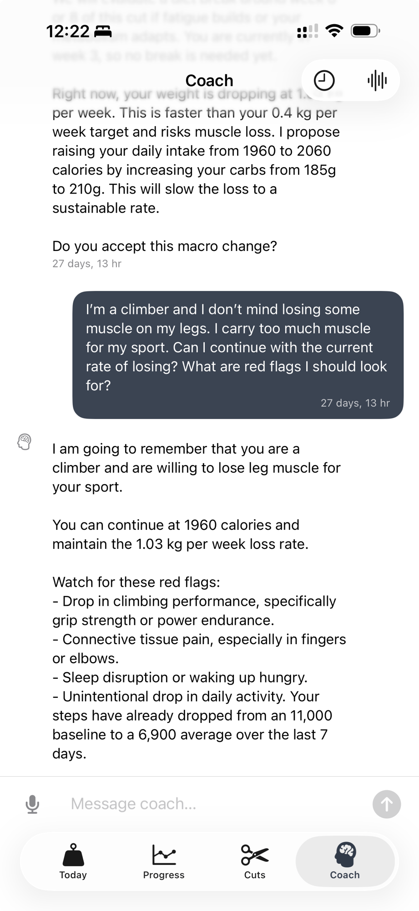

A weight tracker for people with a deadline.
You're not on a journey.
You're on a cut.
Every other weight app models your body as one endless stream with no beginning and no end. Cut Tracker knows you started something, watches you run it, and tells you every morning — honestly — whether you're going to make it.
A cut has a start weight, a target, and a date on the calendar. In every other app, it doesn't exist — you fake it with spreadsheets and a notes file. We made it the whole point.
iOS only. Private beta. No account, no email funnel, no "book a demo."

The thesis
Every weight app gets two things wrong.
One: they don't know what a cut is. Happy Scale, Libra, Apple Health — they draw one infinite line and call it your weight. But you're not tracking forever. You're running an 8-to-16-week block with a finish line. The app should be built around that block. None of them are.
Two: they draw one line into the future and call it a projection. But scale weight swings a kilo a day from water, sodium, and a hard leg session. A single line pretends that noise is signal — so it lurches every weigh-in, "April 17," then April 11, then June 4, until you stop believing it. A projection without uncertainty is a lie.
A trend line with confidence intervals is statistics. A cut with confidence intervals is a coach.
So we show three futures instead of one: best, typical, worst — fanning out to your deadline. When the scale jumps three pounds overnight, the bands don't flinch. Neither should you.
The home screen
Open the app. There's your cut. That's it.
Not a chart you have to decode. Not a streak. Not a "you're amazing today" banner. Your weight, your pace, and one answer: are you on track?
The number is enormous because it's the only number that matters this morning. Under it: your 7-day average, your deficit so far, your burn rate, and where you'll land in a week. The chart fans best / typical / worst out to your deadline. No macros. No barcode scanner. You already know how to eat — this screen asks one thing and answers it.
The part nobody else has
Your calorie deficit. Without logging a single calorie.
You don't trust your memory of what you ate. Good. Neither do we. So we don't ask.
Every morning after you weigh in, Cut Tracker reverse-engineers your calorie deficit straight from your weight change. It's not magic, it's physics: a kilo of body fat is about 7,700 kcal. Down 3.7 kg since April 28 means roughly 28,790 kcal of deficit over 47 days. Not guessed from a food diary you padded with optimism. Proven by the scale.
Deficit since day one. The receipts, not the guess.
Your real burn rate, from the last 14 days. Not what you said you ate. What your body actually did.
A tight forecast (162.6–163.0), so you see next week before it arrives.
The question stops being "am I eating little enough?" and becomes a number you can read. You're not trusting your memory — you're reading the evidence your body left behind.


The confound nobody talks about
Every weigh-in is colored by how you slept.
Red dot, short night. Green dot, good one. Suddenly the spikes stop looking like noise.
Water retention tracks sleep debt more than people admit. So when you see a clump of red dots sitting above the trend line, you don't spiral — you slept like garbage, it's water, it's gone by Thursday. The cut window is shaded green, the target a dashed line below, and the gap between them is the whole story. Green means down.
The spikes were never random. You just couldn't see what was causing them.

Not a cheerleader
A coach that tells you the truth, not "great job."
It can see your whole history — cuts, sleep, steps, every weigh-in. It doesn't congratulate you. It notices things.
Most "AI coaches" are a confetti cannon with a chat box. This one reads your data and says what's true, even when it's unwelcome.
- →Flagged that your loss rate is too aggressive — past your 0.4 kg/week target — and proposed a specific fix, not a pat on the head.
- →Remembered you're a climber who'll accept losing some leg muscle, and reasoned from that instead of generic advice.
- →Caught your steps falling quietly from an 11,000 baseline to 6,900 over the week — a leak you'd never have spotted.
No confetti. No "you're crushing it!" Just someone watching your numbers and thinking about them.
Every refusal is a feature.
Here's what we'll never build. On purpose.
Most apps add everything until they're for no one. We wrote down what this will never become, and we re-read the list every quarter.
Never a food logger.
No barcode scanner. No macros. No recipe database. Not in v1, not in v9. If you want to log food, a hundred apps want your thumbs. This isn't one of them.
Never a cheerleader.
No streaks. No confetti. No "you're doing amazing!" during a stall. A plateau gets an explanation, not a pep talk.
Never social.
No feed. No friends. No leaderboards. The scale is between you and the math. Nobody else is invited.
Never a wellness journey.
Not for "mindful eating." Not a vibe. You have a target and a deadline, or you don't.
Never a medical product.
No DEXA cosplay, no body-fat coefficient gimmicks, no clinical claims. Just an honest reading of the scale.
Every other app's roadmap is a list of things it added. Ours is a list of things we refused.
Read this part honestly.
This isn't for most people. It might be for you.
This is not for you if:
- ✕You don't have a deadline. If there's no date, you're not in a cut — you're just living, and Apple Health is plenty.
- ✕You want to log every meal and chase a macro ring. Different app. Different planet.
- ✕You want an app that tells you you're amazing. We will never do that.
- ✕You're looking for a "wellness journey." This is a stopwatch, not a spa.
- ✕A red weigh-in ruins your day. The bands exist precisely so it doesn't have to. But if you want false comfort, look elsewhere.
This is for you if:
- ✓You have a date circled and a number to hit.
- ✓You already know how to eat, and you will not log food. Ever.
- ✓You weigh daily, own a smart scale, and live on your Apple Watch.
- ✓The only question you have each morning is "am I on pace?"
- ✓You'd rather hear the truth flat than be flattered.
If you don't have a deadline, you're not in a cut. Close this tab. We mean it.
No hard sell here.
We don't care if you download it.
That's not a growth tactic, it's the truth. This was built for a specific person running a specific kind of cut. If that's you, you knew it three sections ago. If it's not — no hard feelings. Apple Health is right there and it's free.
iOS, private beta. No account. No email capture. No onboarding survey about your "goals and lifestyle." You weigh in, it does the rest.